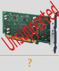

Target driver for QLogic ISP chipsets
 This is an SCST driver for ISP QLogic chipsets commonly used in many SCSI and FC host bus adapters. It is based on Matthew Jacob's (http://www.feral.com) multiplatform driver for ISP chipsets. Update for SCST was made by Stanislaw Gruszka for Open-E Inc.
The latest release is 1.0.2. It supports kernel versions between 2.6.16 and 2.6.32.
This driver is obsoleted in favor of qla2x00t.
Old target driver for QLogic qla2x00t adapters for 2.4 kernels
Old target driver for QLogic qla2x00t adapters is capable to work on 2.4 kernels. It has all required features and looks to be quite stable. It is designed to work in conjunction with the initiator driver, which is intended to perform all the initialization and shutdown tasks. In the current release as a base for the initiator driver was taken Red Hat's driver from the stock 2.4.20 kernel. Then it was patched to enable the target mode and provide all necessary callbacks, and it's still able to work as initiator only. Mode, when a host acts as the initiator and the target simultaneously, is also supported. This driver is obsoleted in favor of 2.6-based driver.
The latest version is 0.9.3.4. Requires Linux kernel versions 2.4.20 or higher and SCST version 0.9.3-pre4 or higher. If you are lucky, it works also on 2.6 kernels, see README file for details. Tested on i386 only, but should work on any other supported by Linux platform.
Currently it is not supported and listed here for historical reasons only.
Target drivers for Adaptec 7xxx and QLogic QLA12xx adapters
Target drivers for Adaptec 7xxx and QLogic QLA12xx adapters have been developed by Hu Gang and they available for download from http://bj.soulinfo.com/~hugang/scst/tgt/. These drivers are not completed, but looks to be a good starting point if you are going to use one of these adapters. SCST team don't have the appropriate hardware, therefore have not tested and don't support these drivers. Send all questions to Hu Gang < hugang at soulinfo com >. If some of these drivers don't compile for you, try again with SCST version 0.9.3-pre2.
Patches for UNH-iSCSI Target 1.5.03 and 1.6.00 to SCST
SCST is much more advanced, than the internal mid-level of UNH-iSCSI target driver. With SCST the iSCSI target benefits from all its features and gets ability to use all its advantages, like high performance and scalability, SMP support, required SCSI functionality emulation, etc.
Since the interface between SCST and the target drivers is based on work, done by UNH IOL, it was relatively simple to update UNH-iSCSI target to work over SCST. Mostly it was "search and replace" job. The built-in scsi_target remains available as a compile-time option.
Requires Linux kernel versions 2.4.20 or higher or 2.6.7 or higher and SCST version 0.9.2 or higher.
Currently it is not supported and listed here for historical reasons only.